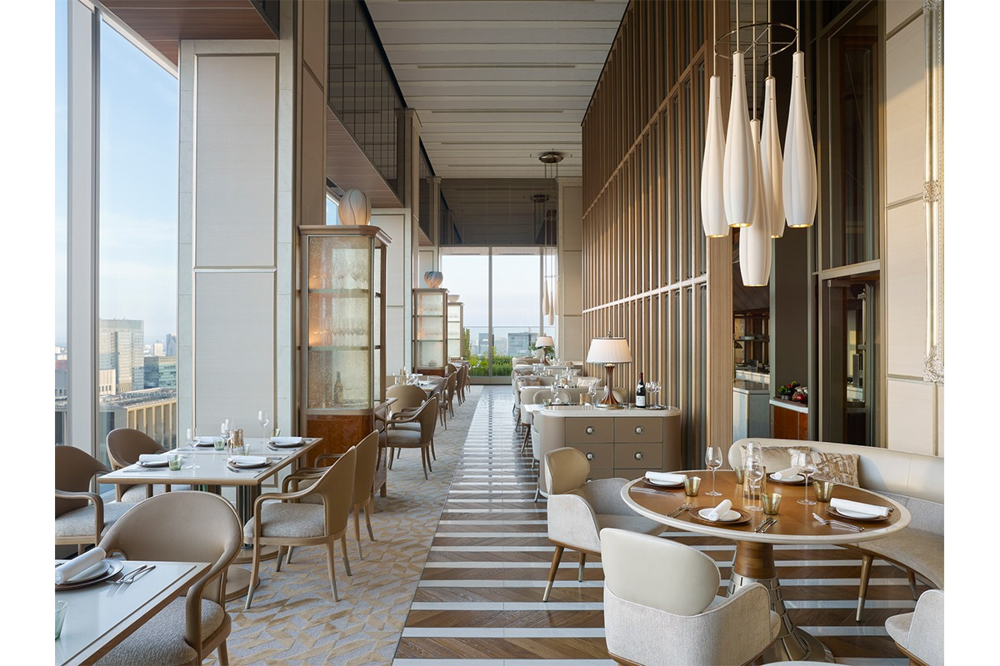
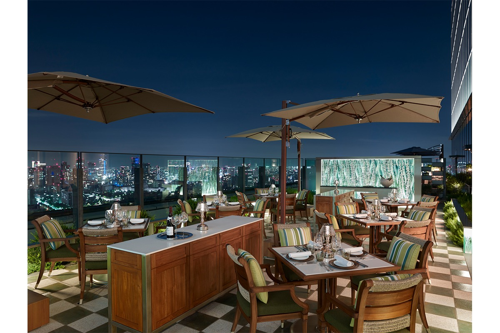
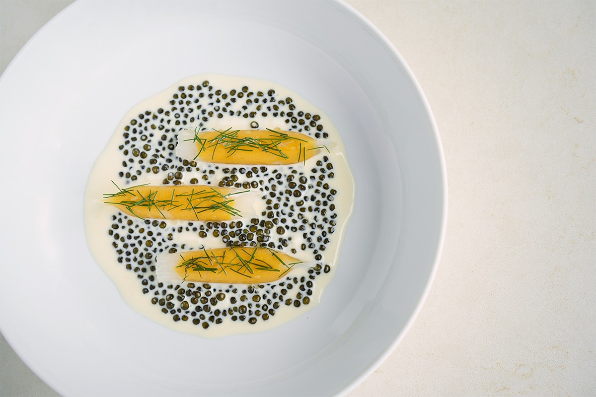
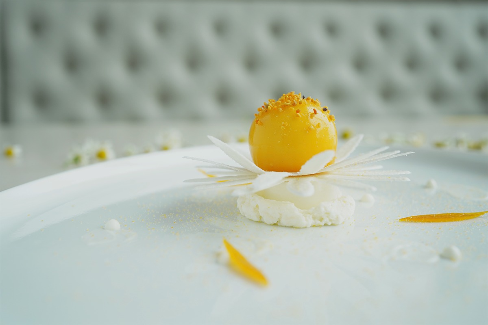
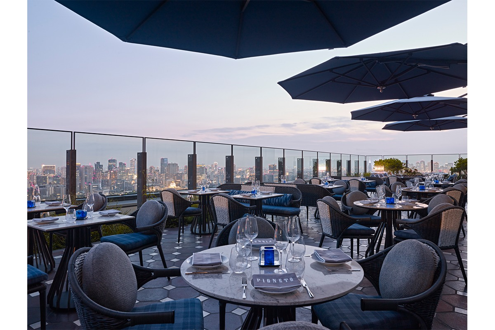
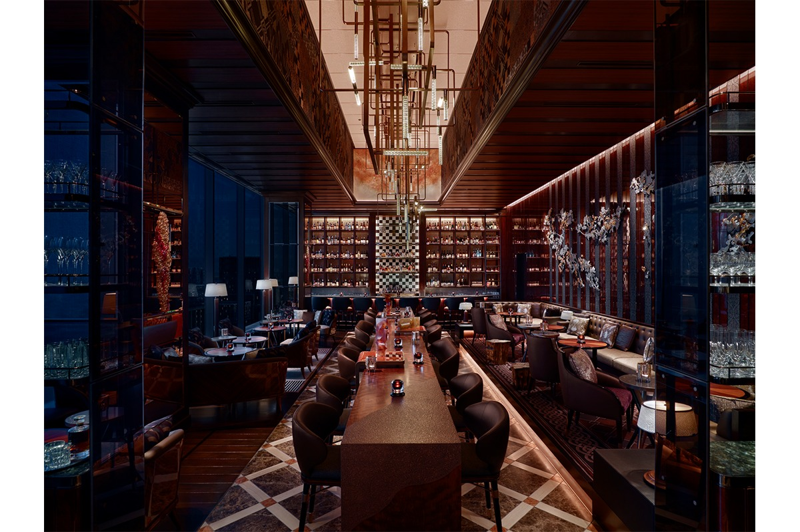
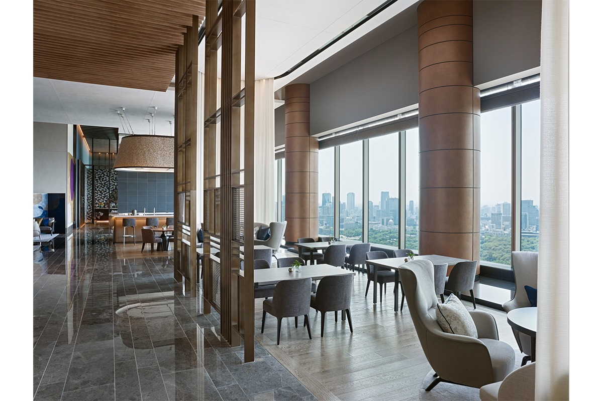

Токио · Отэмати · отель
Four Seasons Hotel Tokyo at Otemachi: французская кухня, Италия на террасе и чай с видом на Императорский дворец

Отель Four Seasons Hotel Tokyo at Otemachi открылся 1 сентября 2020 года в Отэмати, рядом с Императорским дворцом. Сюда приходят не только ночевать: в отеле три пространства для еды и напитков и терраса на крыше с панорамой города.
Отель
Новый адрес для гурманов
Four Seasons Hotel Tokyo at Otemachi открылся 1 сентября 2020 года и сразу заявил о себе как о новом месте для встреч и ужинов в Токио, куда гурманы приходят ради вкуса. Три зала и терраса на крыше с панорамой города созданы по проекту студии Spin Design Studio. Командой поваров руководит шеф-повар отеля, итальянец по происхождению, и вместе они предлагают такой опыт ресторана, какого в городе ещё не было.
Французская кухня
est: сокровища японского терруара

В est открытая кухня, и сезонные продукты здесь в центре всего. Ресторан ведёт Гийом Бракаваль, шеф с мишленовской звездой. Он готовит современную французскую кухню, а вдохновение черпает в японском терруаре, то есть в местах, где растут и ловят продукты. Шеф сам ездит по стране и выбирает поставщиков: морепродукты привозят с Кюсю, а из садов префектуры Вакаяма больше 50 видов цитрусовых. Блюда строятся вокруг вкуса самого продукта.

Винную карту составил шеф-сомелье ресторана. Кроме французских и итальянских вин в ней много бутылок Нового Света, и о каждом вине можно расспросить: откуда оно, какая у него история, кто его делает. До или после ужина бокал можно взять на открытой террасе и смотреть на панораму города, а можно устроить дегустацию.
Десерты здесь похожи на маленькие произведения искусства. Их делает шеф-кондитер ресторана из свежих фруктов и редких японских продуктов от небольших хозяйств, например сахара васанбон и агар-агара. Каждый десерт посвящён одному из 72 коротких сезонов старого японского календаря, которые сменяют друг друга примерно раз в пять дней.

est
- Часы работы
- обед 11:30–15:30 (последний заказ сета 13:30), ужин 18:00–22:00 (последний заказ сета 20:30)
Италия
PIGNETO: радость изобилия

В PIGNETO всё устроено так, чтобы гости чувствовали себя как дома за семейным столом. Итальянцы называют это «аббонданца», радость щедрой и полной жизни. Начать вечер предлагают с аперитива на открытой террасе с панорамой города или с бокала от небольших итальянских виноделен, где виноград собирают вручную и делают вино маленькими партиями. Зал напоминает весёлый и модный Милан 1980-х годов.
За столиками внутри видно, как работает кухня. Опытный повар готовит традиционную пасту, пиццайоло раскатывает тесто для пиццы, мясные нарезки в салумерии только итальянские. Особенно хорош стейк по-флорентийски из кьянины, дорогой тосканской породы быков. Щедрые порции, дружелюбная подача и прилавок с разноцветными продуктами, как на рынке, передают беззаботную энергию Рима.
После работы стоит подняться на террасу «Террацца» на аперитиво. На закате здесь наливают просекко, итальянские коктейли и вина небольших виноделен без ограничений по количеству бокалов. Обстановка стильная и бодрая, но спокойная, и настроение быстро становится римским.
PIGNETO
- Часы работы
- завтрак 6:30–10:30, обед 11:30–14:00, чай 14:30–17:00 (последний заказ 16:30), ужин 17:30–22:30 (последний заказ 22:00)
Бар
VIRTÙ: Париж встречает Токио

VIRTÙ это бар с парижским настроением на фоне ночного Токио. Главный бармен соединяет французскую классику и крепкие напитки с японской дотошностью в мелочах. Здесь есть винтажные спиртные напитки и редкий французский бренди, а в отдельной комнате для крепкого алкоголя проводят дегустации. Кроме авторских коктейлей и редких тоников в меню есть линейка коктейлей по семи добродетелям бусидо, кодекса чести самураев.
Зал украшают изделия японских ремесленников. Можно спокойно выпить привычный коктейль, а можно попробовать что-то новое. Бар принимает небольшие частные встречи, делает коктейли на выбор бармена и проводит мастер-классы. Стоит попробовать и крафтовое пиво Saison de Tokyo: его варят на пивоварне в Синдзюку специально для VIRTÙ.
VIRTÙ
- Часы работы
- воскресенье–среда 17:00–24:00 (последний заказ 23:30), четверг–суббота 17:00–1:00 (последний заказ 0:30)
Чай
THE LOUNGE: вид на дворец и Фудзи

Из THE LOUNGE видно внизу Императорский дворец, а вдалеке Фудзи. Сладости и закуски для чаепития готовят шеф-кондитер отеля Юсукэ Аоки и мастер японских сладостей вагаси. К традиционному английскому чаю можно взять парфе из сезонных продуктов или японский десерт. Аоки в 2018 году стал чемпионом мира на конкурсе шоколатье C3, который компания Valrhona проводила в Нью-Йорке, и его пирожные с шоколадом Valrhona стоит оставить на десерт.
Японский чай выбирает чайный сомелье отеля, и подборка меняется по сезонам. Чай заваривают неспешно, чтобы раскрылись вкус и аромат листа. Для любителей кофе есть кофе одного происхождения, обжаренный в Японии.
Лаунж подходит и для делового завтрака, и для небольшой встречи. Во время вечернего чая на закате здесь играют музыканты в кимоно, созданных по замыслу Иссэя Мияке.
THE LOUNGE
- Часы работы
- завтрак 8:00–11:00 (последний заказ 10:30), обед 11:30–13:00, послеобеденный чай 13:00–15:00 (последний заказ 14:30) и 15:30–17:30 (последний заказ 17:00), напитки и закуски 17:30–23:00 (последний заказ 22:30)
Four Seasons Hotel Tokyo at Otemachi
- Адрес
- Токио, Тиёда, Отэмати, 1-2-1
- Телефон
- +81 3-6810-0600
- Как добраться
- подземным переходом от выходов C4 и C5 станции Отэмати
- Сайт
- fourseasons.com